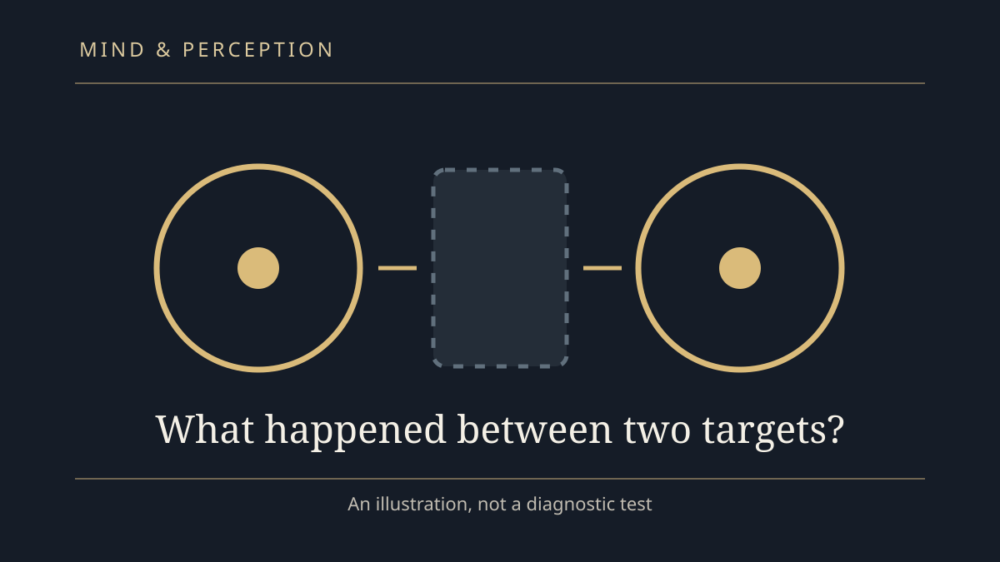

Unpublished buyer guide · commercial link withheld
Twelve minutes of quiet—what are you actually buying?
Time is the honest problem. Plenty of people want a brief, repeatable listening routine without committing their entire evening. A guided audio may be convenient. But convenience and a claim about changing your brain are not the same thing.
This guide distinguishes what Zen12's seller describes from what independent science demonstrates. Nothing here is a claim that we used the product, that it treats an illness, or that a stranger's results will be yours.
Optional original 42-second film concept
Play only if you choose after a playable rights-cleared file is independently produced and reviewed. This static concept is readable without JavaScript, motion or sound. No embedded player is installed.

Read full film transcript and story beats
0–7 seconds: “Two letters can appear on the same screen. You can report the first and miss the second.”
7–14 seconds: “Psychologists call this the attentional blink. Your eyes need not close.”
14–21 seconds: “A study of intensive meditation training found differences on a laboratory version of this task.”
21–28 seconds: “But that did not test a retail meditation recording—or promise a permanent change.”
28–35 seconds: “Zen12 sells short audio sessions. The format is a feature; the claimed brain effects are another question.”
35–42 seconds: “Start with the free twelve-minute baseline. Then check the evidence and exact offer before deciding.”
Original storyboard concept. Captions: ZEN12_42S_CAPTIONS.vtt. Poster: original SVG. No autoplay, video element, externally hosted content, analytics request or fallback dependency.
The missing second target
In Raymond, Shapiro and Arnell's 1992 rapid-letter experiments, some second targets were reported poorly when they arrived a fraction of a second after the first. A later 2007 study by Slagter and colleagues tested intensive meditation training on a related attention task and found a training-linked difference. Neither experiment tested Zen12. A credible buying decision begins by refusing to confuse a laboratory task with a product promise.
Read the original attentional-blink study · Read the intensive-training study
A free, useful demonstration
Before paying for audio, try a simple twelve-minute routine without downloading anything: silence notifications, set a timer, sit comfortably if you wish, decide what you want from the session (rest, reflection or a gentle pause), and write down how practical it felt afterward. Repeat on another day. This is a personal preference check, not a clinical trial, attention test or promise of treatment.
If you want a structured record, Final Vestige's existing free 52-page Seven Day Focus Fieldbook already includes a 30-day log and an audio-claims checklist. Using it is optional; no signup is required to read this independent review.
The offer described by the seller
On the official Zen12 main site and /about page, the seller describes twelve-minute audio sessions, a sequence of twelve levels, and four style choices: relaxation music, guided meditation, white noise, and nature sounds. A different Zen12 /secret/ promotional page describes a full twelve-level, forty-eight-MP3 bundle with bonuses and seller-stated support. These are distinct sales surfaces, not proof that every checkout, package, refund policy or affiliate campaign offers identical terms.
The promotional page currently displays a price, discount code and countdown. Because those elements can change independently and the final referred checkout is unauthenticated, **this draft deliberately quotes no price, discount, savings, expiry, commission, refund window or final order terms**. The named commercial destination must be authenticated and reviewed again before any activation.
Seller pages independently consulted 2026-11-17: inspire3.com · zen12.com · zen12.com/about · zen12.com/secret/ . The latter is not an approved FV referral URL.
What the research does—and does not—support
- Supported: controlled attentional-blink experiments show timing-dependent errors in reporting a second target (Raymond et al., 1992).
- Supported with narrow scope: one 2007 study linked intensive meditation training with laboratory attention changes (Slagter et al.).
- Mixed: a 2023 systematic review of 14 binaural-beat EEG studies found inconsistent entrainment evidence and heterogeneous methods.
- Not established: Zen12 itself reliably treats anxiety, improves cognition, increases income or makes twelve minutes equivalent to an hour's advanced meditation.
- Unknown: named Final Vestige partner approval, exact approved offer, promotion rights, earning URL, final referred refund terms and authenticated merchant settlement.
Six questions before paying
- Which exact package and number of tracks will this checkout deliver?
- Is the purchase one-time, recurring or part of an upsell sequence? Verify on the final checkout.
- Are support, refund eligibility and timing written in the terms for this exact transaction?
- Does any seller claim rely on research using the same product, population and outcome?
- Would an ordinary timer, free guide or music you already own meet the same need?
- Would you still value the format if no brainwave, health or performance claims were made?
If any answer is uncertain, do not rush. A thoughtful buying guide should help someone choose not to buy when the fit is poor.
Who might—and might not—want this format
Someone who prefers short downloadable, guided listening sessions may find the advertised format worth comparing with alternatives. Someone looking for verified treatment of a medical condition, a guaranteed concentration increase, or a scientifically established substitute for long-term meditation should not treat the promotional claims as evidence. For any individual health concern, this commercial review is not a substitute for qualified care.
Zen12: independent comparison, not yet an active recommendation
The potential value is a structured library of short listening sessions rather than a promise of a changed brain. The precise sale, refund terms, and suitability require buyer and merchant verification. No seller link is currently activated.
If a purchase link is later authorized here, Final Vestige may earn a commission if you buy through it, at no additional cost to you. No affiliate link is active in this draft.
On hold until named partner approval, authorized exact-SKU URL, channel rights, checkout and refund evidence are verified, and release is approved.
The decision you can make today
Try the free routine. Read the product-specific questions. Keep the scientific findings separate from the seller's claims. You may decide that a brief MP3 routine is appealing, or that your existing timer and the free Fieldbook are enough. Either choice is an informed outcome; no purchase is required to access the underlying investigation.
Explore how Final Vestige checks suggestion claims in the historical record.